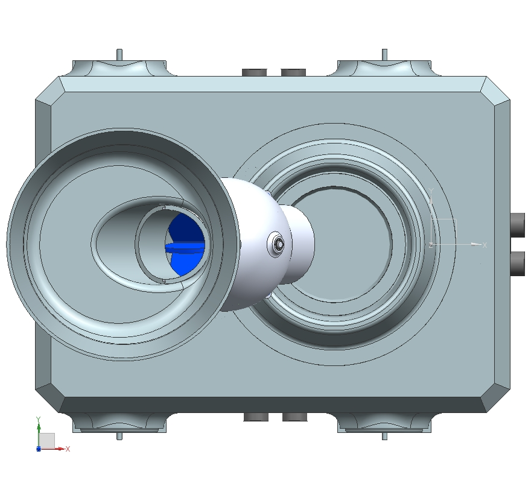
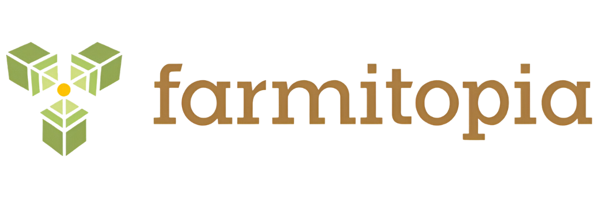
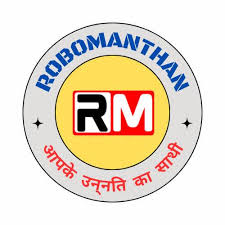
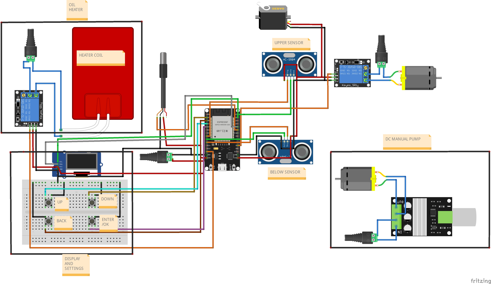
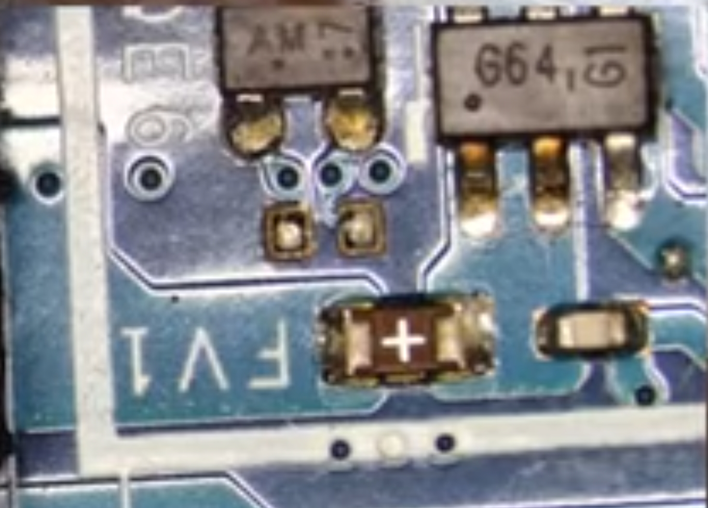
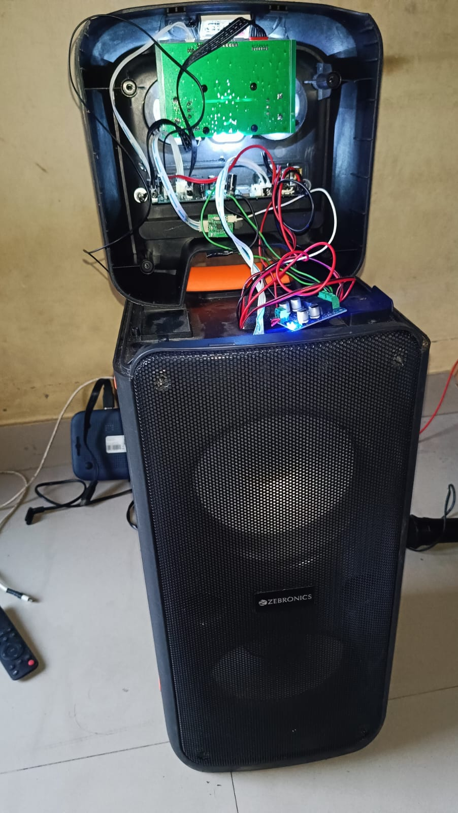
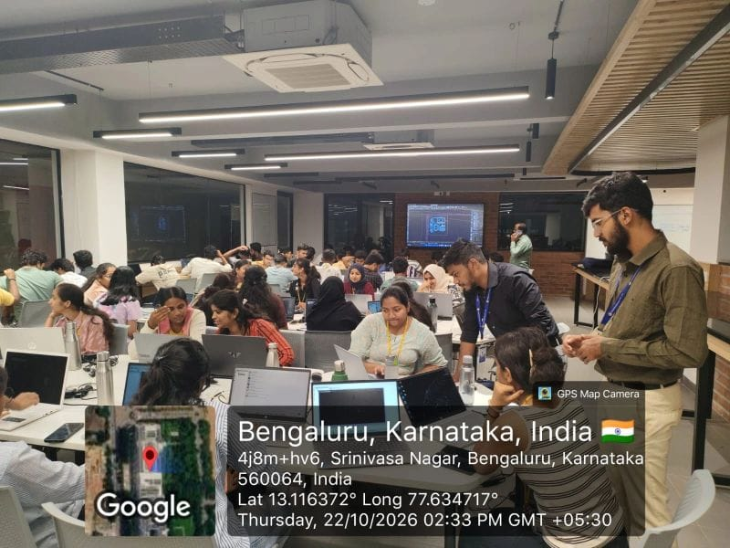

Featured Projects
Selected embedded hardware, robotics, assistive AI, patent drawings, and custom PCB projects built from ground up.

FidoFeed: IoT Interactive Pet Assistant Bot
Mobile companion robot featuring complete patent specification and 7 official drawings (system block diagram, circuit schematics, 3D CAD multi-tier chassis, hopper dispenser, and base drive). Integrated Tailscale VPN and pet facial recognition.

FARMITOPIA: Autonomous Coffee Drying Yard Raker
Heavy-duty agricultural robot with hybrid ROS2 Nav2 + ESP32-S3 micro-ROS, RTK-GPS / Decawave UWB polygon lot mapping, 12V linear actuator blade lift, BH1750 lux monitoring, and motor current stall detection.

Smart Blind Stick: AI Turn-by-Turn Navigation
Assistive mobility wand with Google Maps-style spoken walking directions (NEO-M9N GNSS + BNO055 IMU compass), A* auto-recalculation, directional haptic feedback, YOLOv8 Nano object detection, tactile braille keypad, and emergency SOS.

Automated PCB Isolation Plotter & CNC Platform
Full Python/Flask platform parsing RS-274X Gerber and Excellon drill files, calculating copper isolation contours and generating machine-ready G-code for Klipper-based CNC milling and plotting.
NAVIS & NAVIS 2.0: Autonomous Companion Robot
Master-slave companion bot integrating Raspberry Pi for computer vision and NLP voice interaction with an ESP32 real-time motor/servo driver, controllable via an Android PWA/APK.
Industrial CCMS Gateway & Latch Relay Fleet
Enterprise ESP-IDF firmware for Centralized Control Monitoring Systems connecting over Mutual-TLS (port 8883) with AWS IoT Jobs OTA, Modbus RTU/DLMS parameter harvesting, and magnetic latching relay control.
Autonomous Agricultural Mapping & Irrigation Robot
Autonomous agricultural mobile robot combining 360° YDLIDAR 2D laser scanning, wheel odometry kinematics, and real-time SLAM (GMapping/Cartographer) on ROS 2 Humble for high-resolution field mapping, obstacle avoidance, and precision targeted irrigation pump actuation.

Shirodhara Automated Ayurvedic Therapy System
Medical therapy automation featuring closed-loop PID thermal control (DS18B20), synchronized oscillatory oil vessel dispensing, OLED SSD1306 UI, and dual-pump oil recirculation.
ESP32 4-Channel Optoisolated Relay Module
Custom-engineered PCB for 230V AC home appliance automation with complete galvanic isolation (PC817 optocouplers), flyback protection diodes, isolation milling, and status LEDs.
IoT Seismic & Flood Early Warning Station
Multi-threat disaster monitor using ADXL335 3-axis accelerometer for calibrated dual-level tremor detection and magnetic float sensors for flood stages with instant multi-user SMS dispatch.
Smart Dimmable LED Chess Board
USB-C rechargeable warm white COB LED illuminated chess board with 1S2P Li-ion cells, TP4056 BMS with DW01 protection, MT3608 boost converter, and 95% efficient NE555 / MOSFET PWM dimming.
WebRTC Encrypted Walkie-Talkie Intercom
Full-duplex real-time audio intercom platform built on Node.js, WebSockets, and WebRTC with self-signed SSL encryption for teleoperating mobile robots and team communications.

Laptop Motherboard Micro-Soldering & Schematic Diagnostics
Root-cause diagnostics and repair of blown display backlight power rails (+BL_PWR_SRC). Traced boardview nets from screen connector JEDP1 to blown SMD fuse FV1; executed precision microscope micro-soldering, component jumpering, and board restoration.

Zebronics Party Speaker Audio Amp Teardown & Class-D Retrofit
Teardown and complete hardware revival of a failed Zebronics high-power trolley speaker. Diagnosed electrolyte capacitor crust leakage and fried driver IC; retrofitted an upgraded high-efficiency dual-channel Class-D stereo audio amplifier module with filtered DC power bus.

PCB Design & Hardware Prototyping Workshop Lead
Conducted interactive university lab workshops mentoring 50+ students in electronic schematic design, KiCad 2-layer PCB layout routing, surface-mount soldering techniques, and hardware test bench verification.